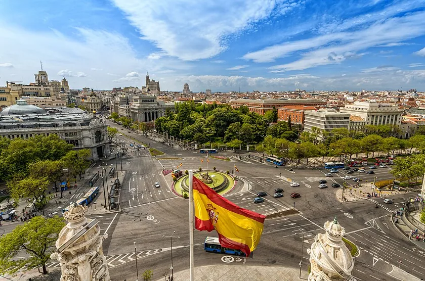

ESPAÑA · EUROPE
Welcome to Spain
A little piece of my world.
Discover Madrid
Explore Spain
12 places to discover
A Taste of Spain
Tapas, sweets and regional favorites
Spanish Culture and Traditions
Festivals and traditions
26 fun facts
Spain vs. the USA
| Topic | Spain | USA |
|---|
Real Madrid and the Bernabéu
Founded in 1902, Real Madrid won the first five European Cups. Its home ground is the Santiago Bernabéu on the Paseo de la Castellana.
El Clásico is Real Madrid against FC Barcelona. Football also has a local side, from neighborhood clubs to rivals across the same city.
Things to Do in Spain Together
Our Spain checklist
How Spanish Are You?
Ten questions on places, food, traditions and a little fútbol.